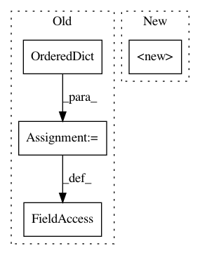

3dcd0e531d051152d4422688d9a715a1901f9a86,linearmodels/iv/results.py,IVModelComparison,__init__,#IVModelComparison#Any#,1166
Before Change
def __init__(self, results):
if not isinstance(results, (dict, OrderedDict)):
_results = OrderedDict()
for i, res in enumerate(results):
_results["Model " + str(i)] = results[i]
results = _results
elif not isinstance(results, OrderedDict):
_results = OrderedDict()
for key in sorted(results.keys()):
_results[key] = results[key]
results = _results
self._results = results
def estimator_type(self):
pass
After Change
_supported = (IVResults, IVGMMResults, OLSResults)
def __init__(self, results):
super(IVModelComparison, self).__init__(results)
@property
def rsquared_adj(self):
Sample-size adjusted coefficients of determination (R**2)
In pattern: SUPERPATTERN
Frequency: 3
Non-data size: 4
Instances
Project Name: bashtage/linearmodels
Commit Name: 3dcd0e531d051152d4422688d9a715a1901f9a86
Time: 2017-04-21
Author: kevin.k.sheppard@gmail.com
File Name: linearmodels/iv/results.py
Class Name: IVModelComparison
Method Name: __init__
Project Name: uber/ludwig
Commit Name: d4617a8be67cf9784161fee75a9a83b0a947974b
Time: 2020-03-21
Author: jimthompson5802@aol.com
File Name: ludwig/features/binary_feature.py
Class Name: BinaryOutputFeature
Method Name: BinaryOutputFeature_2
Project Name: IDSIA/sacred
Commit Name: 0cd42478586c9cb1febb6b76eea068aac8869a1e
Time: 2018-01-24
Author: dismaldenizen@gmail.com
File Name: sacred/ingredient.py
Class Name: Ingredient
Method Name: __init__